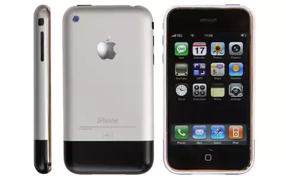

Snapchat has become one of the biggest social media platforms in the past 5 years. This is due to many of it's unique features like disapearing messages, stories, facial recognition lenses, geofilters and many more. However, it took awhile to get where we are today.
In 2002, the first cellphone with a camera built into it was introduced to the U.S. It was sprints Sanyo SCP-5300. The quality of images were very poor since they were made for very small screens. Though it was a very basic interface, it came with image filters like sepia, black and white, and negative.
Fastfoward 5 years to the creation of the very first smartphone, the Apple iPhone. Released in July of 2007, The iPhone quickly became an inspiration for many new smartphones within the next few years.

In 2010, the photo sharing app Instagram was introduced. It allowed for square format images to be shared as a nod to vintage polaroid photos. This was accomponied by 16 different filters that pulled in many users at this time, since photo filters were still in their basic stages. Image filters became highly popular in a short time.
The next year, Snapchat was realeased and added a new twist on photosharing. Snapchat allowed users to share photos with each other that would last for up to 10 seconds and then be gone forever. Wihin a year, Snapchat became widely popular.
At the end of 2013, Snapchat first introduced filters to it's interface. This allowed a blue, pink, and black & white filter, along with speed, weather, and timestamps.

In July of 2014, Snapchat introduced geofilters in many major cities and areas. THis later expanded to many different areas.
In September of 2015, facial recognizing filters were introduced to Snapchat and were called Lenses

Soon many advertisers took advantage of the new craze for Snapchat Lenses and began making promotional Lenses for movie,tv, and music releases
Snapchat later released a lense that allowed you to faceswap with a friend and later introduced a feature to face swap with an image in your camera roll.
In 2016, Snapchat introduced a way to create custom GeoFilters for events or businesses. In mid-2017, the feature was brought into the mobile interface for in-app usage.
In April of 2016, Snapchat introduced a 3D AR filter called World Lenses. These allow you to incoropate 3D animations to real world images.
Late 2016, Snapchat partnered with Bitmoji, an app that allows you to create a 2D illustrated character of yourself. These are used as both stickers, filters, and 3D WorldLenses
April 2016, Instagram introduces Stories to their app along with their own take on Snapchat's Lenses, called Selfie Filters

March 28, 2017 Facebook stories were introduced. Camera lenses similar to Snapchats and Instagrams are used for stories and also for Messenger's Videochat interface

Snapchats most recent introduction to it's lense interface is the ability to share custom lenses on Snapchat using SnapCodes.